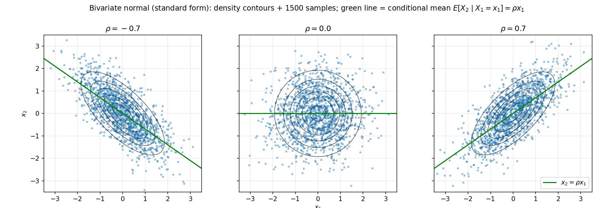

19. Random vectors and the multivariate normal
Chapter 18 worked with a pair \((X, Y)\); this chapter stacks \(d\) variables into one column vector \(\mathbf{X} = (X_1, \ldots, X_d)^T\) and builds the single most-used distribution in machine learning on top of it: the multivariate normal. Chapter 18’s §18.6 already showed the sum of independent normals is normal; here the whole vector is normal, the covariance becomes a matrix, and everything — affine maps, marginals, conditionals, standardization — stays inside the normal family. The core construction is exactly the source’s: start from independent standard normals and apply a linear map.
19.1 Random vectors: the mean vector and the covariance matrix
Def. A random vector is \(\mathbf{X} = (X_1, \ldots, X_d)^T\), a column of \(d\) random variables on the same experiment. Its joint PDF \(f_{\mathbf{X}}(\mathbf{x})\) works exactly like §17.12’s joint PDF, one dimension higher: \[P(\mathbf{X} \in A) = \int_A f_{\mathbf{X}}(\mathbf{x})\, d\mathbf{x}.\]
Two summaries replace the scalar mean and variance:
Def (mean vector). \(\boxed{E[\mathbf{X}] = (E[X_1], \ldots, E[X_d])^T = \boldsymbol{\mu}}\) — expectation acts coordinate-wise.
Def (covariance matrix). With \(\boldsymbol{\mu} = E[\mathbf{X}]\), \[\boxed{\boldsymbol{\Sigma} = \operatorname{Cov}(\mathbf{X}) = E\big[(\mathbf{X} - \boldsymbol{\mu})(\mathbf{X} - \boldsymbol{\mu})^T\big]},\] a \(d \times d\) matrix whose \((i, j)\) entry is \[\Sigma_{ij} = E\big[(X_i - \mu_i)(X_j - \mu_j)\big] = \operatorname{Cov}(X_i, X_j) = E[X_i X_j] - E[X_i]E[X_j] \quad \text{(§17.9)}.\]
- The diagonal is variance: \(\Sigma_{ii} = \operatorname{Var}(X_i) \ge 0\).
- Symmetry: \(\Sigma_{ij} = \Sigma_{ji}\), so \(\boldsymbol{\Sigma}^T = \boldsymbol{\Sigma}\) — the matrix is symmetric.
- The short form. Expanding the outer product, \[\boxed{\boldsymbol{\Sigma} = E[\mathbf{X}\mathbf{X}^T] - \boldsymbol{\mu}\boldsymbol{\mu}^T}\] (proof: \(E[(\mathbf{X}-\boldsymbol{\mu})(\mathbf{X}-\boldsymbol{\mu})^T] = E[\mathbf{X}\mathbf{X}^T] - \boldsymbol{\mu}\boldsymbol{\mu}^T - \boldsymbol{\mu}\boldsymbol{\mu}^T + \boldsymbol{\mu}\boldsymbol{\mu}^T\) — Problem 2 asks you to write it out).
Theorem (a covariance matrix is always positive semi-definite). For any fixed vector \(\mathbf{a} \in \mathbb{R}^d\), \[\mathbf{a}^T\boldsymbol{\Sigma}\mathbf{a} = \operatorname{Var}(\mathbf{a}^T\mathbf{X}) \ge 0,\] so \(\boldsymbol{\Sigma}\) is positive semi-definite (§7.9’s PSD concept).
Proof. \(\mathbf{a}^T\boldsymbol{\Sigma}\mathbf{a} = \mathbf{a}^T E[(\mathbf{X}-\boldsymbol{\mu})(\mathbf{X}-\boldsymbol{\mu})^T]\mathbf{a} = E[\mathbf{a}^T(\mathbf{X}-\boldsymbol{\mu})(\mathbf{X}-\boldsymbol{\mu})^T\mathbf{a}] = E\big[(\mathbf{a}^T(\mathbf{X}-\boldsymbol{\mu}))^2\big]\). But \(\mathbf{a}^T(\mathbf{X}-\boldsymbol{\mu}) = \mathbf{a}^T\mathbf{X} - \mathbf{a}^T\boldsymbol{\mu}\) is a scalar random variable with mean \(0\), so its second moment is its variance, and a variance is never negative. ∎
Note. This is the same argument as §7.9’s Problem 7 (\(\mathbf{A}^T\mathbf{A}\) is PSD for any real \(\mathbf{A}\)): a covariance is a sum/average of outer products \(\mathbf{v}\mathbf{v}^T\), and \(\mathbf{a}^T\mathbf{v}\mathbf{v}^T\mathbf{a} = (\mathbf{a}^T\mathbf{v})^2 \ge 0\) term by term. Consequences: every eigenvalue of \(\boldsymbol{\Sigma}\) is \(\ge 0\) (§7.9), and \(\det(\boldsymbol{\Sigma}) \ge 0\).
Note (correlation form). Dividing by the standard deviations recovers §17.10’s correlation coefficient entry-wise: \(\rho_{ij} = \Sigma_{ij}/(\sigma_i\sigma_j)\), i.e. \(\boldsymbol{\Sigma} = \mathbf{D}\mathbf{R}\mathbf{D}\) with \(\mathbf{D} = \operatorname{diag}(\sigma_1, \ldots, \sigma_d)\) and \(\mathbf{R}\) the correlation matrix (\(R_{ii} = 1\), \(|R_{ij}| \le 1\)).
eg 1 (from a joint table). \((X, Y)\) discrete with \(P(0,0) = 0.1\), \(P(0,1) = 0.2\), \(P(1,0) = 0.3\), \(P(1,1) = 0.4\) (first index \(X\), second \(Y\)). - Means: \(E[X] = 0(0.3) + 1(0.7) = 0.7\); \(E[Y] = 0(0.4) + 1(0.6) = 0.6\). So \(\boldsymbol{\mu} = (0.7,\ 0.6)^T\). - Variances: \(E[X^2] = E[X] = 0.7\) (since \(X^2 = X\) for \(0\)–\(1\) values), \(\operatorname{Var}(X) = 0.7 - 0.7^2 = 0.21\); \(\operatorname{Var}(Y) = 0.6 - 0.6^2 = 0.24\). - \(E[XY] = P(X=1, Y=1) = 0.4\); \(\operatorname{Cov}(X, Y) = 0.4 - 0.7\cdot0.6 = -0.02\). \[\boxed{\boldsymbol{\Sigma} = \begin{pmatrix} 0.21 & -0.02 \\ -0.02 & 0.24 \end{pmatrix}}.\] Symmetric ✓. PSD check: diagonal \(> 0\) and \(\det = 0.21\cdot0.24 - 0.0004 = 0.05 > 0\) (§7.9’s \(2\times2\) test) ✓. Correlation \(\rho = -0.02/\sqrt{0.21\cdot0.24} \approx -0.089\) — nearly uncorrelated.
Basically, … A random vector’s covariance matrix is just “§17.9’s covariance, arranged in a table”: diagonal = each variable’s variance, off-diagonal = each pair’s covariance. It is always symmetric and positive semi-definite (the PSD fact is just “\(\mathbf{a}^T\boldsymbol{\Sigma}\mathbf{a}\) is a variance, and variances are non-negative”). If you remember one thing: a covariance matrix can never have a negative eigenvalue.
19.2 Affine transformations: \(\mathbf{Y} = \mathbf{A}\mathbf{X} + \mathbf{b}\)
Every later result in this chapter is an application of two formulas. Let \(\mathbf{X}\) have mean \(\boldsymbol{\mu}\) and covariance \(\boldsymbol{\Sigma}\), \(\mathbf{A}\) an \(m \times d\) matrix, \(\mathbf{b}\) a vector.
Theorem. For \(\mathbf{Y} = \mathbf{A}\mathbf{X} + \mathbf{b}\): \[\boxed{E[\mathbf{Y}] = \mathbf{A}\boldsymbol{\mu} + \mathbf{b}}, \qquad \boxed{\operatorname{Cov}(\mathbf{Y}) = \mathbf{A}\boldsymbol{\Sigma}\mathbf{A}^T}.\]
Proof. Mean: \(E[\mathbf{A}\mathbf{X} + \mathbf{b}] = \mathbf{A}E[\mathbf{X}] + \mathbf{b}\) by linearity of expectation, coordinate-wise. Covariance: \(\mathbf{Y} - E[\mathbf{Y}] = \mathbf{A}(\mathbf{X} - \boldsymbol{\mu})\) (the \(\mathbf{b}\) cancels), so \[\operatorname{Cov}(\mathbf{Y}) = E\big[\mathbf{A}(\mathbf{X}-\boldsymbol{\mu})(\mathbf{X}-\boldsymbol{\mu})^T\mathbf{A}^T\big] = \mathbf{A}\,E\big[(\mathbf{X}-\boldsymbol{\mu})(\mathbf{X}-\boldsymbol{\mu})^T\big]\,\mathbf{A}^T = \mathbf{A}\boldsymbol{\Sigma}\mathbf{A}^T,\] pulling the constant matrices out of the expectation. ∎
- Scalar special case: for \(\mathbf{a}^T\mathbf{X}\) (one linear combination), \(\operatorname{Var}(\mathbf{a}^T\mathbf{X}) = \mathbf{a}^T\boldsymbol{\Sigma}\mathbf{a}\) — exactly the PSD proof’s quantity in §19.1.
- §17.11 is the \(d = 2\) case: \(\operatorname{Var}(X + Y)\) is \((1,\ 1)\,\boldsymbol{\Sigma}\,(1,\ 1)^T = \sigma_1^2 + \sigma_2^2 + 2\operatorname{Cov}(X, Y)\).
- The shift \(\mathbf{b}\) moves the mean but never touches the covariance — spreading is translation-invariant.
eg 2. \(\boldsymbol{\mu} = (0,\ 1)^T\), \(\boldsymbol{\Sigma} = \begin{pmatrix} 2 & 1 \\ 1 & 1 \end{pmatrix}\), and \(\mathbf{Y} = \begin{pmatrix} 1 & 1 \\ 1 & -1 \end{pmatrix}\mathbf{X}\) (sum and difference — §18.5’s eg 9 transform, no shift). - \(E[\mathbf{Y}] = \mathbf{A}\boldsymbol{\mu} = \begin{pmatrix} 1 & 1 \\ 1 & -1 \end{pmatrix}\begin{pmatrix} 0 \\ 1 \end{pmatrix} = \boxed{\begin{pmatrix} 1 \\ -1 \end{pmatrix}}\). - \(\boldsymbol{\Sigma}\mathbf{A}^T = \begin{pmatrix} 2 & 1 \\ 1 & 1 \end{pmatrix}\begin{pmatrix} 1 & 1 \\ 1 & -1 \end{pmatrix} = \begin{pmatrix} 3 & 1 \\ 2 & 0 \end{pmatrix}\); then \[\operatorname{Cov}(\mathbf{Y}) = \mathbf{A}(\boldsymbol{\Sigma}\mathbf{A}^T) = \begin{pmatrix} 1 & 1 \\ 1 & -1 \end{pmatrix}\begin{pmatrix} 3 & 1 \\ 2 & 0 \end{pmatrix} = \boxed{\begin{pmatrix} 5 & 1 \\ 1 & 3 \end{pmatrix}}.\] Sanity: \(\operatorname{Var}(X_1 + X_2) = 2 + 1 + 2(1) = 5\) ✓ (§17.11); symmetric ✓; \(\det = 15 - 1 = 14 > 0\), still PSD ✓.
Basically, … An affine map does the obvious thing to the mean (map it, then shift) and sandwiches the covariance (\(\mathbf{A}\boldsymbol{\Sigma}\mathbf{A}^T\)). The sandwich is the whole story of this chapter: the multivariate normal is built by sandwiching the identity covariance.
19.3 The standard normal vector
Def. Let \(Z_1, \ldots, Z_d \stackrel{\text{i.i.d.}}{\sim} N(0, 1)\) (§16.9). The standard normal vector is \(\mathbf{Z} = (Z_1, \ldots, Z_d)^T\). By independence the joint density is the product: \[\boxed{f_{\mathbf{Z}}(\mathbf{z}) = \prod_{i=1}^{d} \frac{1}{\sqrt{2\pi}}e^{-z_i^2/2} = \frac{1}{(2\pi)^{d/2}}\exp\!\left(-\frac{1}{2}\lVert\mathbf{z}\rVert^2\right)}.\]
- \(E[\mathbf{Z}] = \mathbf{0}\) and \(\operatorname{Cov}(\mathbf{Z}) = \mathbf{I}\) — variance \(1\) on the diagonal, independence ⇒ \(0\) off it (§17.9).
- The density depends on \(\mathbf{z}\) only through \(\lVert\mathbf{z}\rVert^2 = \mathbf{z}^T\mathbf{z}\): it is rotationally symmetric — rotating \(\mathbf{z}\) changes nothing. (This is why the construction in §19.6 works with any square root \(\mathbf{A}\) of \(\boldsymbol{\Sigma}\).)
Basically, … The standard normal vector = “\(d\) independent copies of the bell curve, packed into one column”. Its density is a perfect round hill: \((2\pi)^{-d/2}\) normalizer, \(\exp(-\lVert\mathbf{z}\rVert^2/2)\) shape. Mean zero, covariance the identity — the blank canvas everything else is painted on.
19.4 The bivariate normal: the source’s construction
The MLF deck builds the bivariate normal in one concrete case, then generalizes — this chapter follows the same path. Take \(Z_1, Z_2 \stackrel{\text{i.i.d.}}{\sim} N(0,1)\) and, for a fixed \(\rho \in (-1, 1)\), \[\boxed{X_1 = Z_1, \qquad X_2 = \rho Z_1 + \sqrt{1 - \rho^2}\,Z_2}, \qquad\text{i.e. }\mathbf{X} = \mathbf{A}\mathbf{Z},\ \ \mathbf{A} = \begin{pmatrix} 1 & 0 \\ \rho & \sqrt{1-\rho^2} \end{pmatrix}.\]
Step 1 — mean and covariance (§19.2). \(E[X_1] = E[Z_1] = 0\); \(E[X_2] = \rho\cdot0 + \sqrt{1-\rho^2}\cdot0 = 0\). \(\operatorname{Var}(X_1) = 1\). \(\operatorname{Var}(X_2) = \rho^2\operatorname{Var}(Z_1) + (1-\rho^2)\operatorname{Var}(Z_2) = \rho^2 + 1 - \rho^2 = 1\) (independence kills the cross term, §17.11). And \[\operatorname{Cov}(X_1, X_2) = E[X_1X_2] = E\big[Z_1(\rho Z_1 + \sqrt{1-\rho^2}\,Z_2)\big] = \rho\,E[Z_1^2] + \sqrt{1-\rho^2}\,E[Z_1]E[Z_2] = \rho\cdot1 + 0 = \rho.\] So the parameter \(\rho\) is the correlation coefficient (§17.10), and \[\boxed{\boldsymbol{\Sigma} = \begin{pmatrix} 1 & \rho \\ \rho & 1 \end{pmatrix}}.\] Check against the sandwich: \(\mathbf{A}\mathbf{A}^T = \begin{pmatrix} 1 & 0 \\ \rho & \sqrt{1-\rho^2} \end{pmatrix}\begin{pmatrix} 1 & \rho \\ 0 & \sqrt{1-\rho^2} \end{pmatrix} = \begin{pmatrix} 1 & \rho \\ \rho & \rho^2 + 1 - \rho^2 \end{pmatrix} = \boldsymbol{\Sigma}\) ✓.
Step 2 — the density via the Jacobian (§18.5). \(\mathbf{A}\) is invertible (\(\det\mathbf{A} = \sqrt{1-\rho^2} > 0\)), with \[\mathbf{A}^{-1} = \begin{pmatrix} 1 & 0 \\ -\rho/\sqrt{1-\rho^2} & 1/\sqrt{1-\rho^2} \end{pmatrix}, \qquad |\det\mathbf{A}^{-1}| = \frac{1}{\sqrt{1-\rho^2}}.\] The linear change of variables (§18.5, constant-Jacobian case) gives \[f_{\mathbf{X}}(\mathbf{x}) = f_{\mathbf{Z}}(\mathbf{A}^{-1}\mathbf{x})\,|\det\mathbf{A}^{-1}| = \frac{1}{2\pi\sqrt{1-\rho^2}}\exp\!\left(-\frac{1}{2}\lVert\mathbf{A}^{-1}\mathbf{x}\rVert^2\right).\] Since \(\lVert\mathbf{A}^{-1}\mathbf{x}\rVert^2 = \mathbf{x}^T\mathbf{A}^{-T}\mathbf{A}^{-1}\mathbf{x}\) and \(\mathbf{A}^{-T}\mathbf{A}^{-1} = (\mathbf{A}\mathbf{A}^T)^{-1} = \boldsymbol{\Sigma}^{-1}\), \[\boxed{f_{\mathbf{X}}(\mathbf{x}) = \frac{1}{2\pi\sqrt{\det\boldsymbol{\Sigma}}}\exp\!\left(-\frac{1}{2}\,\mathbf{x}^T\boldsymbol{\Sigma}^{-1}\mathbf{x}\right)}, \qquad \boldsymbol{\Sigma}^{-1} = \frac{1}{1-\rho^2}\begin{pmatrix} 1 & -\rho \\ -\rho & 1 \end{pmatrix}.\] Note \(\det\boldsymbol{\Sigma} = 1 - \rho^2 = (\det\mathbf{A})^2\) — the Jacobian factor is exactly \(1/\sqrt{\det\boldsymbol{\Sigma}}\).
eg 3 (the density written out, \(\rho = 1/2\)). \(\det\boldsymbol{\Sigma} = 3/4\), \(\boldsymbol{\Sigma}^{-1} = \frac{4}{3}\begin{pmatrix} 1 & -1/2 \\ -1/2 & 1 \end{pmatrix} = \begin{pmatrix} 4/3 & -2/3 \\ -2/3 & 4/3 \end{pmatrix}\). Hence \[\boxed{f(x_1, x_2) = \frac{1}{\pi\sqrt{3}}\exp\!\left(-\frac{2}{3}\big(x_1^2 - x_1x_2 + x_2^2\big)\right)}\] (normalizer: \(2\pi\sqrt{3/4} = \pi\sqrt{3}\) ✓; exponent: \(-\tfrac12\cdot\tfrac43(x_1^2 - x_1x_2 + x_2^2)\) ✓).
The figure shows this family for \(\rho \in \{-0.7, 0, 0.7\}\): the contours are ellipses whose tilt follows the sign of \(\rho\); at \(\rho = 0\) they are circles and the two coordinates are independent.
Basically, … The bivariate normal = “take two independent standard normals, tilt one into the other by the correlation \(\rho\)”. Everything — the \(\begin{pmatrix}1&\rho\\\rho&1\end{pmatrix}\) covariance, the \(1/\sqrt{1-\rho^2}\) normalizer, the elliptical contours — falls out of that one construction plus the Jacobian rule. The general multivariate normal is the same idea with a \(d \times d\) matrix.
19.5 Marginals and conditionals of the bivariate normal
The deck’s payoff move: factor the §19.4 density. Since \(\lVert\mathbf{A}^{-1}\mathbf{x}\rVert^2 = x_1^2 + (x_2 - \rho x_1)^2/(1-\rho^2)\), \[\begin{aligned} f_{\mathbf{X}}(x_1, x_2) &= \frac{1}{2\pi\sqrt{1-\rho^2}}\exp\!\left(-\frac{x_1^2}{2}\right)\exp\!\left(-\frac{(x_2-\rho x_1)^2}{2(1-\rho^2)}\right) \\ &= \underbrace{\frac{1}{\sqrt{2\pi}}e^{-x_1^2/2}}_{N(0,1)\text{ density in }x_1} \cdot \underbrace{\frac{1}{\sqrt{2\pi}\sqrt{1-\rho^2}}\exp\!\left(-\frac{(x_2-\rho x_1)^2}{2(1-\rho^2)}\right)}_{N(\rho x_1,\ 1-\rho^2)\text{ density in }x_2}. \end{aligned}\] The joint factors as marginal \(\times\) conditional (§17.4’s multiplication rule), and both factors are normal:
\[\boxed{X_1 \sim N(0, 1)}, \qquad \boxed{X_2 \mid X_1 = x_1 \sim N\big(\rho x_1,\ 1 - \rho^2\big)}.\]
- The conditional mean \(E[X_2 \mid X_1 = x_1] = \rho x_1\) is a straight line through the origin — the green line in the figure. Observing \(x_1\) shifts your best guess of \(X_2\) toward it, scaled by \(\rho\).
- The conditional variance \(1 - \rho^2\) is smaller than the marginal variance \(1\) (unless \(\rho = 0\)): knowing \(X_1\) removes the \(\rho^2\) share of \(X_2\)’s uncertainty.
- By symmetry of the joint density in \(x_1, x_2\) (swap the labels — the deck leaves this as an exercise): \(X_2 \sim N(0,1)\) and \(\boxed{X_1 \mid X_2 = x_2 \sim N(\rho x_2,\ 1-\rho^2)}\).
General bivariate normal. Rescaling (§19.7) lifts this to \(X_i \sim N(\mu_i, \sigma_i^2)\) with correlation \(\rho\): \[\boxed{X_1 \sim N(\mu_1, \sigma_1^2)}, \qquad \boxed{X_2 \mid X_1 = x_1 \sim N\!\left(\mu_2 + \rho\frac{\sigma_2}{\sigma_1}(x_1 - \mu_1),\ \ \sigma_2^2(1-\rho^2)\right)}.\] (Hand-derived from the standard case by \(X_i = \mu_i + \sigma_i Z_i\)-style scaling; logged in the review.)
eg 4 (conditioning, \(\rho = 0.5\), standard case). Observe \(X_1 = 2\). Then \(X_2 \mid X_1 = 2 \sim N(0.5\cdot2,\ 1 - 0.25) = \boxed{N(1,\ 0.75)}\). Hence \[P(X_2 > 1.5 \mid X_1 = 2) = P\!\left(Z > \frac{1.5 - 1}{\sqrt{0.75}}\right) = P(Z > 0.5774) = 1 - \Phi(0.5774) \approx \boxed{0.282}.\] Note how conditioning helped: the marginal \(P(X_2 > 1.5) = P(Z > 1.5) \approx 0.067\); the observation \(X_1 = 2\) more than quadruples it.
Basically, … For the bivariate normal, marginals and conditionals are all normal — that is the special property the deck highlights. Condition on \(X_1 = x_1\) and \(X_2\) is still a bell curve, just recentered at \(\rho x_1\) (the regression line) and squeezed to variance \(1-\rho^2\). Correlation = “how much of \(X_2\)’s wiggle \(X_1\) explains”.

19.6 The general multivariate normal: definition
Nothing in §19.4 used that \(d = 2\) except the matrix size. Let \(\mathbf{Z} \in \mathbb{R}^d\) be the standard normal vector (§19.3), \(\mathbf{A}\) any invertible \(d \times d\) matrix, \(\boldsymbol{\mu} \in \mathbb{R}^d\):
\[\boxed{\mathbf{X} = \mathbf{A}\mathbf{Z} + \boldsymbol{\mu} \sim \mathcal{N}_d(\boldsymbol{\mu}, \boldsymbol{\Sigma})}, \qquad \boldsymbol{\Sigma} = \mathbf{A}\mathbf{A}^T.\]
Def (multivariate normal PDF). For positive definite \(\boldsymbol{\Sigma}\), \[\boxed{f_{\mathbf{X}}(\mathbf{x}) = \frac{1}{(2\pi)^{d/2}\,\sqrt{\det\boldsymbol{\Sigma}}}\exp\!\left(-\frac{1}{2}\,(\mathbf{x}-\boldsymbol{\mu})^T\boldsymbol{\Sigma}^{-1}(\mathbf{x}-\boldsymbol{\mu})\right)}.\] The derivation is §19.4’s Jacobian computation with \(d\) in place of \(2\): \(f_{\mathbf{X}}(\mathbf{x}) = f_{\mathbf{Z}}(\mathbf{A}^{-1}(\mathbf{x}-\boldsymbol{\mu}))\,|\det\mathbf{A}^{-1}|\), and \(|\det\mathbf{A}^{-1}| = 1/\sqrt{\det\boldsymbol{\Sigma}}\) since \(\det\boldsymbol{\Sigma} = (\det\mathbf{A})^2\). Then \(E[\mathbf{X}] = \boldsymbol{\mu}\) and \(\operatorname{Cov}(\mathbf{X}) = \mathbf{A}\mathbf{I}\mathbf{A}^T = \boldsymbol{\Sigma}\) by §19.2.
- Two parameters only. The whole distribution is fixed by the mean vector \(\boldsymbol{\mu}\) (\(d\) numbers) and the covariance matrix \(\boldsymbol{\Sigma}\) (\(d(d+1)/2\) numbers by symmetry).
- The density sees \(\mathbf{A}\) only through \(\boldsymbol{\Sigma}\). Different square roots of the same \(\boldsymbol{\Sigma}\) give different random vectors with the same density — the deck’s scalar example: \(Z\) and \(-Z\) are different variables with identical \(N(0,1)\) densities.
- \(\boldsymbol{\Sigma}\) must be positive definite (§7.9): \(\boldsymbol{\Sigma} = \mathbf{A}\mathbf{A}^T\) with \(\mathbf{A}\) invertible forces every eigenvalue \(> 0\), so \(\det\boldsymbol{\Sigma} > 0\) and \(\boldsymbol{\Sigma}^{-1}\) exists. The deck’s \(2\times2\) form: \(\begin{pmatrix} a^2 & \rho ab \\ \rho ab & b^2 \end{pmatrix}\) with \(|\rho| < 1\); \(\begin{pmatrix} 1 & 3 \\ 3 & 1 \end{pmatrix}\) is not a valid covariance (\(\rho = 3\) is impossible — compare §7.9’s non-definite \(\begin{pmatrix} 1 & 2 \\ 2 & 1 \end{pmatrix}\)).
Def (Mahalanobis distance). The exponent’s quadratic form defines \[\boxed{d_{\boldsymbol{\Sigma}}(\mathbf{x}, \boldsymbol{\mu}) = \sqrt{(\mathbf{x}-\boldsymbol{\mu})^T\boldsymbol{\Sigma}^{-1}(\mathbf{x}-\boldsymbol{\mu})}},\] so \(f_{\mathbf{X}}(\mathbf{x}) \propto \exp(-d_{\boldsymbol{\Sigma}}^2/2)\) — the Mahalanobis form.
- When \(\boldsymbol{\Sigma} = \mathbf{I}\), this is ordinary Euclidean distance: the standard normal is “Mahalanobis with the identity”.
- Contours \(d_{\boldsymbol{\Sigma}} = c\) are ellipsoids centered at \(\boldsymbol{\mu}\) whose axes point along \(\boldsymbol{\Sigma}\)’s eigenvectors (§6.11), with half-lengths \(c\sqrt{\lambda_i}\) — the figure’s ellipses, in \(d\) dimensions. (Chapter 24’s PCA reads these axes as the principal components.)
- Reading: distance measured in units of spread along each direction — a point \(3\) units out along a high-variance direction is “closer” (more likely) than \(3\) units along a low-variance one.
Basically, … The multivariate normal = “take the round standard-normal hill, stretch it by \(\mathbf{A}\), move it to \(\boldsymbol{\mu}\)”. Its density needs only the mean vector and the covariance matrix. The Mahalanobis distance is the ruler that knows about the stretching: points are judged not by raw Euclidean distance from the mean, but by distance relative to how spread out each direction is — which is why the contours are ellipses, not spheres.
19.7 Affine maps stay normal: properties
The deck lists the key properties; all follow from \(\mathbf{X} = \mathbf{A}\mathbf{Z} + \boldsymbol{\mu}\) plus §19.2.
Theorem (affine closure). If \(\mathbf{X} \sim \mathcal{N}_d(\boldsymbol{\mu}, \boldsymbol{\Sigma})\), \(\mathbf{B}\) is \(k \times d\), and \(\mathbf{c} \in \mathbb{R}^k\), then \[\boxed{\mathbf{Y} = \mathbf{B}\mathbf{X} + \mathbf{c} \sim \mathcal{N}_k\big(\mathbf{B}\boldsymbol{\mu} + \mathbf{c},\ \mathbf{B}\boldsymbol{\Sigma}\mathbf{B}^T\big)}.\]
Why. Write \(\mathbf{X} = \mathbf{A}\mathbf{Z} + \boldsymbol{\mu}\); then \(\mathbf{Y} = (\mathbf{B}\mathbf{A})\mathbf{Z} + (\mathbf{B}\boldsymbol{\mu} + \mathbf{c})\) is again “linear map of \(\mathbf{Z}\) plus shift” — the definition of a (possibly lower-dimensional) normal. Mean and covariance come from §19.2. ∎
- Linear combinations are (univariate) normal. For a fixed vector \(\mathbf{a}\): \(\boxed{\mathbf{a}^T\mathbf{X} \sim N(\mathbf{a}^T\boldsymbol{\mu},\ \mathbf{a}^T\boldsymbol{\Sigma}\mathbf{a})}\). In particular the sum of independent normals is normal — §18.6’s MGF result, now as a one-line corollary.
- Standardization / whitening. With \(\boldsymbol{\Sigma} = \mathbf{Q}\boldsymbol{\Lambda}\mathbf{Q}^T\) (§6.11), \(\boxed{\mathbf{W} = \boldsymbol{\Sigma}^{-1/2}(\mathbf{X}-\boldsymbol{\mu}) \sim \mathcal{N}_d(\mathbf{0}, \mathbf{I})}\) where \(\boldsymbol{\Sigma}^{-1/2} = \mathbf{Q}\boldsymbol{\Lambda}^{-1/2}\mathbf{Q}^T\); equivalently \(\mathbf{Z} = \mathbf{A}^{-1}(\mathbf{X}-\boldsymbol{\mu})\). The deck’s instance: \(\mathbf{B} = \operatorname{diag}(1/a, 1/b)\) turns the general bivariate \(\boldsymbol{\Sigma} = \begin{pmatrix} a^2 & \rho ab \\ \rho ab & b^2 \end{pmatrix}\) into the correlation form \(\begin{pmatrix} 1 & \rho \\ \rho & 1 \end{pmatrix}\) (check: \(\mathbf{B}\boldsymbol{\Sigma}\mathbf{B}^T\) divides row/column \(i\) by the \(i\)-th scale).
- Zero covariance ⇔ independence (normal only!). If \(\mathbf{X} \sim \mathcal{N}_d(\boldsymbol{\mu}, \boldsymbol{\Sigma})\), then \(X_i \perp X_j\) iff \(\Sigma_{ij} = 0\). The ⇒ direction holds for any variables (§17.9: independence ⇒ \(\operatorname{Cov} = 0\)); the ⇐ direction is special to the normal — for general variables, uncorrelated does not imply independent (§17.10’s warning).
eg 5 (the deck tutorial’s \(N_3\) question). \(\mathbf{Y} \sim \mathcal{N}_3(\boldsymbol{\mu}, \boldsymbol{\Sigma})\) with \(\boldsymbol{\mu} = (3,\ 1,\ 4)^T\) and \(\boldsymbol{\Sigma} = \begin{pmatrix} 6 & 1 & -2 \\ 1 & 13 & 4 \\ -2 & 4 & 4 \end{pmatrix}\). Find the distribution of \(Z = 2Y_1 - Y_2 + 3Y_3 = \mathbf{c}^T\mathbf{Y}\), \(\mathbf{c} = (2, -1, 3)^T\). By (i): \(Z \sim N(\mathbf{c}^T\boldsymbol{\mu},\ \mathbf{c}^T\boldsymbol{\Sigma}\mathbf{c})\). - Mean: \(2(3) + (-1)(1) + 3(4) = 6 - 1 + 12 = 17\). - \(\boldsymbol{\Sigma}\mathbf{c} = \begin{pmatrix} 6 & 1 & -2 \\ 1 & 13 & 4 \\ -2 & 4 & 4 \end{pmatrix}\begin{pmatrix} 2 \\ -1 \\ 3 \end{pmatrix} = \begin{pmatrix} 12-1-6 \\ 2-13+12 \\ -4-4+12 \end{pmatrix} = \begin{pmatrix} 5 \\ 1 \\ 4 \end{pmatrix}\); variance \(= \mathbf{c}^T(\boldsymbol{\Sigma}\mathbf{c}) = 2(5) + (-1)(1) + 3(4) = 10 - 1 + 12 = 21\). \[\boxed{Z \sim N(17,\ 21)}\] (the tutorial’s answer A — e.g. \(P(Z > 22) = P(Z_{\text{std}} > 5/\sqrt{21}) \approx P(Z_{\text{std}} > 1.091) \approx 0.138\)).
eg 6 (whitening a diagonal case). \(\mathbf{X} \sim \mathcal{N}_2\big((1,\ 2)^T,\ \operatorname{diag}(4, 9)\big)\). Standardize coordinate-wise: \(W_1 = (X_1 - 1)/2\), \(W_2 = (X_2 - 2)/3\), i.e. \(\mathbf{W} = \operatorname{diag}(1/2, 1/3)(\mathbf{X}-\boldsymbol{\mu})\). By the theorem, \(\mathbf{W} \sim \mathcal{N}_2(\mathbf{0},\ \mathbf{B}\boldsymbol{\Sigma}\mathbf{B}^T)\) with \(\mathbf{B}\boldsymbol{\Sigma}\mathbf{B}^T = \operatorname{diag}(1/2,1/3)\operatorname{diag}(4,9)\operatorname{diag}(1/2,1/3) = \mathbf{I}\). So \(\boxed{\mathbf{W} \sim \mathcal{N}_2(\mathbf{0}, \mathbf{I})}\) — Problem 7 does the correlated case via the eigendecomposition.
Note (degenerate case). If \(\mathbf{B}\boldsymbol{\Sigma}\mathbf{B}^T\) is singular (e.g. \(\mathbf{B}\) has fewer rows than \(d\), or maps into a lower-dimensional subspace), \(\mathbf{Y}\) is still normal in the “\(\mathbf{A}\mathbf{Z} + \boldsymbol{\mu}\)” sense, but it has no density on \(\mathbb{R}^k\) — all its mass sits on a lower-dimensional affine subspace. The mean/covariance formulas stay valid; only the PDF formula (§19.6) needs a positive definite covariance.
Basically, … “Normal in, normal out”: any affine transformation of a normal vector — a weighted sum, a rescaling, a projection — is still normal, with mean and covariance from §19.2’s formulas. Whitening is the reverse gear: subtract the mean, multiply by \(\boldsymbol{\Sigma}^{-1/2}\), and any normal becomes the round standard one. And the famous freebie: for normals (only for normals), “uncorrelated” and “independent” are the same thing.
19.8 Marginal and conditional distributions in \(d\) dimensions
Theorem (marginals). Partition \(\mathbf{X} = (\mathbf{X}_{(1)}, \mathbf{X}_{(2)})\) with \(\boldsymbol{\mu} = (\boldsymbol{\mu}_1, \boldsymbol{\mu}_2)\) and \(\boldsymbol{\Sigma} = \begin{pmatrix} \boldsymbol{\Sigma}_{11} & \boldsymbol{\Sigma}_{12} \\ \boldsymbol{\Sigma}_{21} & \boldsymbol{\Sigma}_{22} \end{pmatrix}\). Then \(\boxed{\mathbf{X}_{(1)} \sim \mathcal{N}(\boldsymbol{\mu}_1, \boldsymbol{\Sigma}_{11})}\) — just keep the matching rows of \(\boldsymbol{\mu}\) and the matching block of \(\boldsymbol{\Sigma}\).
Why. \(\mathbf{X}_{(1)} = \mathbf{B}\mathbf{X}\) with \(\mathbf{B} = [\mathbf{I}\ \ \mathbf{0}]\); apply §19.7. ∎ (So: any single coordinate \(X_i \sim N(\mu_i, \Sigma_{ii})\).)
Theorem (conditionals). With the same partition (\(\boldsymbol{\Sigma}_{11}\) invertible), \[\boxed{\mathbf{X}_{(2)} \mid \mathbf{X}_{(1)} = \mathbf{x}_1 \sim \mathcal{N}\big(\boldsymbol{\mu}_2 + \boldsymbol{\Sigma}_{21}\boldsymbol{\Sigma}_{11}^{-1}(\mathbf{x}_1 - \boldsymbol{\mu}_1),\ \ \boldsymbol{\Sigma}_{22} - \boldsymbol{\Sigma}_{21}\boldsymbol{\Sigma}_{11}^{-1}\boldsymbol{\Sigma}_{12}\big)}.\]
- This is the \(d\)-dimensional version of §19.5’s \(N(\rho x_1, 1-\rho^2)\): the conditional mean is linear in the observation, and the conditional covariance does not depend on \(\mathbf{x}_1\) — observing data shifts the bell but never changes its shape.
- The matrix \(\boldsymbol{\Sigma}_{22} - \boldsymbol{\Sigma}_{21}\boldsymbol{\Sigma}_{11}^{-1}\boldsymbol{\Sigma}_{12}\) is the Schur complement — the leftover uncertainty in block \(2\) after block \(1\) explains what it can. It is PSD (it is itself a covariance), and \(\le \boldsymbol{\Sigma}_{22}\) in PSD order: conditioning never adds uncertainty.
- Not proved here (the deck doesn’t prove it either): it follows from completing the square in the Mahalanobis exponent after the change of variables \(\mathbf{y}_2 = \mathbf{x}_2 - \boldsymbol{\Sigma}_{21}\boldsymbol{\Sigma}_{11}^{-1}\mathbf{x}_1\), which decorrelates the blocks. The §19.5 bivariate case is the proof for \(d = 2\) — check: \(\boldsymbol{\Sigma}_{21}\boldsymbol{\Sigma}_{11}^{-1} = \rho/1 = \rho\), mean \(\rho x_1\) ✓, Schur complement \(1 - \rho\cdot1\cdot\rho = 1-\rho^2\) ✓.
eg 7 (conditioning in 3-D). \(\mathbf{X} \sim \mathcal{N}_3(\mathbf{0}, \boldsymbol{\Sigma})\), \(\boldsymbol{\Sigma} = \begin{pmatrix} 4 & 2 & 1 \\ 2 & 3 & 0.5 \\ 1 & 0.5 & 2 \end{pmatrix}\) (PD: leading minors \(4 > 0\), \(12-4 = 8 > 0\), \(\det = 14 > 0\) ✓). Find the distribution of \(X_3\) given \((X_1, X_2) = (x_1, x_2)\). - Blocks: \(\boldsymbol{\Sigma}_{11} = \begin{pmatrix} 4 & 2 \\ 2 & 3 \end{pmatrix}\), \(\boldsymbol{\Sigma}_{11}^{-1} = \frac{1}{8}\begin{pmatrix} 3 & -2 \\ -2 & 4 \end{pmatrix}\), \(\boldsymbol{\Sigma}_{21} = (1,\ 0.5)\). - \(\boldsymbol{\Sigma}_{21}\boldsymbol{\Sigma}_{11}^{-1} = (1,\ 0.5)\begin{pmatrix} 0.375 & -0.25 \\ -0.25 & 0.5 \end{pmatrix} = (0.375-0.125,\ -0.25+0.25) = (0.25,\ 0)\). - Conditional mean: \(0 + 0.25x_1 + 0\cdot x_2 = 0.25x_1\). Conditional variance: \(2 - (1,\ 0.5)\cdot(0.25,\ 0)^T = 2 - 0.25 = 1.75\). \[\boxed{X_3 \mid (X_1, X_2) = (x_1, x_2) \sim N(0.25\,x_1,\ 1.75)}.\] Note. The \(0\) coefficient on \(x_2\) says: once \(X_1\) is known, \(X_2\) tells you nothing more about \(X_3\) — the partial correlation of \(X_2, X_3\) given \(X_1\) is zero. Marginal: \((X_1, X_2) \sim \mathcal{N}_2(\mathbf{0}, \boldsymbol{\Sigma}_{11})\) by the marginal theorem.
Basically, … Marginals: cross out the rows you don’t want. Conditionals: the mean becomes a linear function of what you observed (\(\boldsymbol{\mu}_2 + \text{(regression coefficients)}\times(\text{observation} - \text{its mean})\)), and the leftover covariance is the Schur complement — always smaller than before, never depending on the observed values. The bivariate formulas of §19.5 are exactly this with \(1\times1\) blocks.
19.9 Why this matters: the normal workhorse
- Everything linear stays normal. §19.7’s affine closure is why the normal is the default noise model in ML: least squares (§5), linear regression (§23), and Gaussian noise assumptions all run on “normal in, normal out”. The deck uses it immediately for linear regression with Gaussian noise (Week 12, part 2 — Chapter 20’s territory).
- Estimation targets these parameters. Chapter 20’s MLE estimates exactly \(\boldsymbol{\mu}\) and \(\boldsymbol{\Sigma}\) from data — this chapter defined what is being estimated.
- Mixtures build on it. Chapter 25’s Gaussian mixture models are weighted sums of the densities defined here (§19.6).
- The CLT explains its ubiquity. Chapter 21 shows sums of many small independent effects converge to a normal — the reason the bell curve in §16.9 deserved a whole vector-valued upgrade.
- What comes next. Chapter 20 estimates \(\boldsymbol{\mu}, \boldsymbol{\Sigma}\) (MLE/MAP); Chapter 21 explains why normals appear (CLT); Chapter 24 reads \(\boldsymbol{\Sigma}\)’s eigenvectors as principal components.
Problem set
- \((X, Y)\) has joint PMF \(P(0,0) = 0.1\), \(P(0,1) = 0.2\), \(P(1,0) = 0.3\), \(P(1,1) = 0.4\) (first index \(X\)). Find the mean vector \(\boldsymbol{\mu}\) and the covariance matrix \(\boldsymbol{\Sigma}\). Verify symmetry and positive semi-definiteness, and compute the correlation coefficient.
- Prove the short form: \(\boldsymbol{\Sigma} = E[\mathbf{X}\mathbf{X}^T] - \boldsymbol{\mu}\boldsymbol{\mu}^T\), where \(\boldsymbol{\mu} = E[\mathbf{X}]\).
- \(\mathbf{X}\) has \(\boldsymbol{\mu} = (1,\ 2)^T\), \(\boldsymbol{\Sigma} = \begin{pmatrix} 4 & 1 \\ 1 & 2 \end{pmatrix}\). For \(\mathbf{Y} = \mathbf{A}\mathbf{X} + \mathbf{b}\) with \(\mathbf{A} = \begin{pmatrix} 1 & 1 \\ 1 & -1 \end{pmatrix}\), \(\mathbf{b} = (0,\ 1)^T\), find \(E[\mathbf{Y}]\) and \(\operatorname{Cov}(\mathbf{Y})\).
- Write the full bivariate normal PDF for \(\boldsymbol{\mu} = (1,\ -1)^T\), \(\sigma_1 = 2\), \(\sigma_2 = 1\), \(\rho = 0.6\) (give the normalizer numerically and the exponent’s quadratic form explicitly).
- \((X_1, X_2)\) is bivariate normal with \(\mu_1 = \mu_2 = 0\), \(\sigma_1 = \sigma_2 = 1\), \(\rho = 0.5\). (a) Give the distribution of \(X_2 \mid X_1 = 2\). (b) Compute \(P(X_2 > 1.5 \mid X_1 = 2)\).
- \(\mathbf{Y} \sim \mathcal{N}_3(\boldsymbol{\mu}, \boldsymbol{\Sigma})\) with \(\boldsymbol{\mu} = (2,\ -1,\ 5)^T\), \(\boldsymbol{\Sigma} = \begin{pmatrix} 9 & 2 & -1 \\ 2 & 4 & 1 \\ -1 & 1 & 6 \end{pmatrix}\). Find the distribution of \(Z = Y_1 + 2Y_2 - Y_3\).
- \(\mathbf{X} \sim \mathcal{N}_2\big((1,\ 2)^T,\ \begin{pmatrix} 5 & 3 \\ 3 & 5 \end{pmatrix}\big)\). Find \(\boldsymbol{\Sigma}^{-1/2}\) via the eigendecomposition and write the whitened vector \(\mathbf{W} = \boldsymbol{\Sigma}^{-1/2}(\mathbf{X}-\boldsymbol{\mu})\); verify \(\operatorname{Cov}(\mathbf{W}) = \mathbf{I}\).
- \(\mathbf{X} \sim \mathcal{N}_3(\mathbf{0}, \boldsymbol{\Sigma})\), \(\boldsymbol{\Sigma} = \begin{pmatrix} 4 & 0 & 1.5 \\ 0 & 9 & -2 \\ 1.5 & -2 & 16 \end{pmatrix}\). (a) Which pairs of coordinates are independent? (b) Compute the correlation coefficients \(\rho_{13}\) and \(\rho_{23}\).
- \(\mathbf{X} \sim \mathcal{N}_3(\boldsymbol{\mu}, \boldsymbol{\Sigma})\) with \(\boldsymbol{\mu} = (1,\ 0,\ 2)^T\), \(\boldsymbol{\Sigma} = \begin{pmatrix} 2 & 1 & 0.5 \\ 1 & 2 & 0.5 \\ 0.5 & 0.5 & 1 \end{pmatrix}\). Find the distribution of \(X_3\) given \(X_1 = 3\), \(X_2 = -1\).
- \(\mathbf{X} \sim \mathcal{N}_2\big((1,\ 2)^T,\ \begin{pmatrix} 4 & 1 \\ 1 & 1 \end{pmatrix}\big)\). Compute the squared Mahalanobis distance of \(\mathbf{x} = (3,\ 3)^T\) from \(\boldsymbol{\mu}\), and hence the density value \(f_{\mathbf{X}}(3, 3)\).
Solutions
Attempt each problem first, then click a problem to reveal its worked solution.
- \(\boldsymbol{\mu} = (E[X], E[Y])^T = (0.7,\ 0.6)^T\).
- \(E[X^2] = 0^2(0.3) + 1^2(0.7) = 0.7\), so \(\operatorname{Var}(X) = 0.7 - 0.49 = 0.21\). \(E[Y^2] = 0.6\), \(\operatorname{Var}(Y) = 0.6 - 0.36 = 0.24\).
- \(E[XY] = \sum x y\,P(x,y) = 1\cdot1\cdot0.4 = 0.4\) (all other terms have \(x = 0\) or \(y = 0\)). \(\operatorname{Cov}(X,Y) = 0.4 - 0.7\cdot0.6 = -0.02\).
\[\boxed{\boldsymbol{\Sigma} = \begin{pmatrix} 0.21 & -0.02 \\ -0.02 & 0.24 \end{pmatrix}}.\]
Symmetry: off-diagonals equal ✓. PSD: diagonal entries \(> 0\) and \(\det = 0.21\cdot0.24 - (-0.02)^2 = 0.0504 - 0.0004 = 0.05 > 0\), so by §7.9’s \(2\times2\) test the matrix is positive definite (hence PSD) ✓. Correlation: \(\rho = -0.02/\sqrt{0.21\cdot0.24} = -0.02/\sqrt{0.0504} \approx -0.02/0.2245 \approx \boxed{-0.089}\).
$$
This is the matrix version of \(\operatorname{Var}(X) = E[X^2] - (E[X])^2\) (§16.6).
\(\operatorname{Cov}(\mathbf{Y}) = \mathbf{A}\boldsymbol{\Sigma}\mathbf{A}^T\). First \(\boldsymbol{\Sigma}\mathbf{A}^T = \begin{pmatrix} 4 & 1 \\ 1 & 2 \end{pmatrix}\begin{pmatrix} 1 & 1 \\ 1 & -1 \end{pmatrix} = \begin{pmatrix} 5 & 3 \\ 3 & -1 \end{pmatrix}\); then \[\mathbf{A}(\boldsymbol{\Sigma}\mathbf{A}^T) = \begin{pmatrix} 1 & 1 \\ 1 & -1 \end{pmatrix}\begin{pmatrix} 5 & 3 \\ 3 & -1 \end{pmatrix} = \boxed{\begin{pmatrix} 8 & 2 \\ 2 & 4 \end{pmatrix}}.\]
Checks: \(\operatorname{Var}(Y_1) = \operatorname{Var}(X_1+X_2) = 4 + 2 + 2(1) = 8\) ✓; symmetric ✓; \(\det = 32-4 = 28 > 0\), PSD ✓. Note \(Y_1 = X_1 + X_2 + 0\) and \(Y_2 = X_1 - X_2 + 1\) — the shift \(1\) appears only in the mean.
- \(\det\boldsymbol{\Sigma} = 4\cdot1 - 1.44 = 2.56\); \(\sqrt{\det\boldsymbol{\Sigma}} = 1.6\). Normalizer: \(\boxed{(2\pi)\cdot1.6 = 3.2\pi \approx 10.053}\).
- \(\boldsymbol{\Sigma}^{-1} = \frac{1}{2.56}\begin{pmatrix} 1 & -1.2 \\ -1.2 & 4 \end{pmatrix} = \begin{pmatrix} 0.390625 & -0.46875 \\ -0.46875 & 1.5625 \end{pmatrix}\).
\[\boxed{f(x_1,x_2) = \frac{1}{3.2\pi}\exp\!\left(-\frac{1}{2}\Big[0.390625\,(x_1-1)^2 - 0.9375\,(x_1-1)(x_2+1) + 1.5625\,(x_2+1)^2\Big]\right)}\] (the cross term: \(2\cdot(-0.46875)(x_1-1)(x_2+1) = -0.9375\,(x_1-1)(x_2+1)\)).
\[\boxed{X_2 \mid X_1 = 2 \sim N(1,\ 0.75)}.\]
- Standardize: \(P(X_2 > 1.5 \mid X_1 = 2) = P\!\left(Z > \frac{1.5-1}{\sqrt{0.75}}\right) = P(Z > 0.5774) = 1 - \Phi(0.5774)\). \(\Phi(0.5774) \approx 0.71815\), so the answer is \(\boxed{\approx 0.282}\).
Compare with the marginal: \(P(X_2 > 1.5) = 1 - \Phi(1.5) \approx 0.0668\) — conditioning on the large \(X_1\) more than quadruples the probability.
- Mean: \(1(2) + 2(-1) + (-1)(5) = 2 - 2 - 5 = \boxed{-5}\).
- \(\boldsymbol{\Sigma}\mathbf{c} = \begin{pmatrix} 9 & 2 & -1 \\ 2 & 4 & 1 \\ -1 & 1 & 6 \end{pmatrix}\begin{pmatrix} 1 \\ 2 \\ -1 \end{pmatrix} = \begin{pmatrix} 9+4+1 \\ 2+8-1 \\ -1+2-6 \end{pmatrix} = \begin{pmatrix} 14 \\ 9 \\ -5 \end{pmatrix}\); variance \(= \mathbf{c}^T(\boldsymbol{\Sigma}\mathbf{c}) = 1(14) + 2(9) + (-1)(-5) = 14 + 18 + 5 = \boxed{37}\).
\[\boxed{Z \sim N(-5,\ 37)}.\] (Sanity: \(\boldsymbol{\Sigma}\) is PD — leading minors \(9 > 0\), \(36-4 = 32 > 0\), \(\det = 175 > 0\) — so it is a valid covariance.)
\[\boldsymbol{\Sigma}^{-1/2} = \frac{1}{\sqrt{8}}\mathbf{q}_1\mathbf{q}_1^T + \frac{1}{\sqrt{2}}\mathbf{q}_2\mathbf{q}_2^T = \frac{1}{2\sqrt{2}}\cdot\frac{1}{2}\begin{pmatrix} 1 & 1 \\ 1 & 1 \end{pmatrix} + \frac{1}{\sqrt{2}}\cdot\frac{1}{2}\begin{pmatrix} 1 & -1 \\ -1 & 1 \end{pmatrix}.\]
Combining over the common denominator \(4\sqrt{2}\): \[\boxed{\boldsymbol{\Sigma}^{-1/2} = \frac{1}{4\sqrt{2}}\begin{pmatrix} 3 & -1 \\ -1 & 3 \end{pmatrix} \approx \begin{pmatrix} 0.5303 & -0.1768 \\ -0.1768 & 0.5303 \end{pmatrix}}.\]
Verification: \(\operatorname{Cov}(\mathbf{W}) = \boldsymbol{\Sigma}^{-1/2}\boldsymbol{\Sigma}\boldsymbol{\Sigma}^{-1/2}\). Since \(\boldsymbol{\Sigma}^{-1/2}\) is symmetric and \(\boldsymbol{\Sigma}^{-1/2}\boldsymbol{\Sigma}\boldsymbol{\Sigma}^{-1/2} = \boldsymbol{\Sigma}^{-1/2}(\boldsymbol{\Sigma}^{1/2}\boldsymbol{\Sigma}^{1/2})\boldsymbol{\Sigma}^{-1/2} = \mathbf{I}\) (both built from the same \(\mathbf{Q}\)), \(\boxed{\operatorname{Cov}(\mathbf{W}) = \mathbf{I}}\) — and by §19.7, \(\mathbf{W} \sim \mathcal{N}_2(\mathbf{0}, \mathbf{I})\). Numerically, \(\boldsymbol{\Sigma}^{-1/2}\boldsymbol{\Sigma}\boldsymbol{\Sigma}^{-1/2} = \begin{pmatrix} 1 & 0 \\ 0 & 1 \end{pmatrix}\) to machine precision ✓.
- \(\rho_{13} = \Sigma_{13}/\sqrt{\Sigma_{11}\Sigma_{33}} = 1.5/\sqrt{4\cdot16} = 1.5/8 = \boxed{0.1875}\). \(\rho_{23} = \Sigma_{23}/\sqrt{\Sigma_{22}\Sigma_{33}} = -2/\sqrt{9\cdot16} = -2/12 = \boxed{-1/6 \approx -0.1667}\).
(Validity: \(\det\boldsymbol{\Sigma} = 539.75 > 0\) with positive leading minors, so \(\boldsymbol{\Sigma}\) is PD ✓.)
- \(\boldsymbol{\Sigma}_{11}^{-1} = \frac{1}{3}\begin{pmatrix} 2 & -1 \\ -1 & 2 \end{pmatrix}\).
- Regression coefficients: \(\boldsymbol{\Sigma}_{21}\boldsymbol{\Sigma}_{11}^{-1} = (0.5,\ 0.5)\cdot\frac{1}{3}\begin{pmatrix} 2 & -1 \\ -1 & 2 \end{pmatrix} = \frac{1}{3}(0.5,\ 0.5) = (1/6,\ 1/6)\).
- Conditional mean: \(2 + \frac{1}{6}(3 - 1) + \frac{1}{6}(-1 - 0) = 2 + \frac{1}{3} - \frac{1}{6} = 2 + \frac{1}{6} = \boxed{13/6 \approx 2.1667}\).
- Conditional variance (Schur complement): \(1 - (0.5,\ 0.5)\cdot(1/6,\ 1/6)^T = 1 - \frac{1}{6} = \boxed{5/6 \approx 0.8333}\).
\[\boxed{X_3 \mid X_1 = 3,\ X_2 = -1 \sim N(13/6,\ 5/6)}.\]
Squared Mahalanobis distance: \[d_{\boldsymbol{\Sigma}}^2 = \mathbf{d}^T\boldsymbol{\Sigma}^{-1}\mathbf{d} = \frac{1}{3}(2,\ 1)\begin{pmatrix} 1 & -1 \\ -1 & 4 \end{pmatrix}\begin{pmatrix} 2 \\ 1 \end{pmatrix} = \frac{1}{3}(2,\ 1)\begin{pmatrix} 1 \\ 2 \end{pmatrix} = \frac{1}{3}(2 + 2) = \boxed{\frac{4}{3}}.\]
Density: \(f_{\mathbf{X}}(3,3) = \frac{1}{2\pi\sqrt{3}}\exp(-d_{\boldsymbol{\Sigma}}^2/2) = \frac{1}{2\pi\sqrt{3}}e^{-2/3} \approx \frac{0.51342}{10.88280} \approx \boxed{0.0472}\).
(Reading: Euclidean distance from \(\boldsymbol{\mu}\) is \(\sqrt{5} \approx 2.236\), but the Mahalanobis distance is \(\sqrt{4/3} \approx 1.155\) — the point lies mostly along the high-variance direction, so the density judges it “closer” than raw distance suggests.)